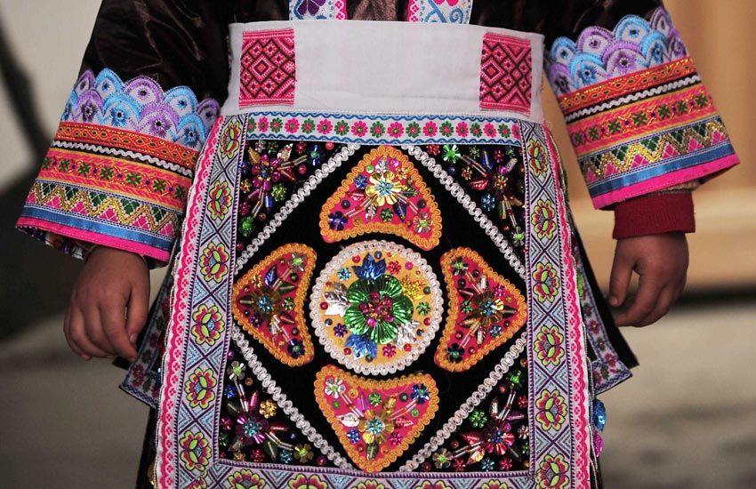
在贵州省黎平县铜关村，村民在展示一件侗族女装。
贵州省黎平县铜关侗族村寨至今仍保持着手工制作侗族服装的传统。侗族服装的制作过程漫长而繁杂，从棉花的种植、收获到一件精美的成衣，要经过纺纱织布、浸染、刺绣等上百个步骤和长达一两年的时间才能完成。
侗族村寨的妇女要先将收获的棉花纺成纱线再织成土布，用一种叫靛蓝草叶的植物反复浸染把布料染成深蓝色，然后将上色的布料放到盛满鸡蛋清的钵体内浸泡数日，使蛋清充分渗透布料表里面，在避风处风干后放在平整的石头上，用木锤上万次捶打去皱，直到布料透亮平直，最后才可以缝制。相对于男装而言，女装要在衣服的袖口、对襟等多个部位手工绣上各种漂亮的图案，装点上银饰，制作过程复杂很多。刺绣的过程快的要几个月，慢的要一年之久才能完工。由于制作过程漫长而艰辛，侗族服装也倍显珍贵。它不仅凝聚了侗家人的心血，更是侗族民族精华的完美体现。
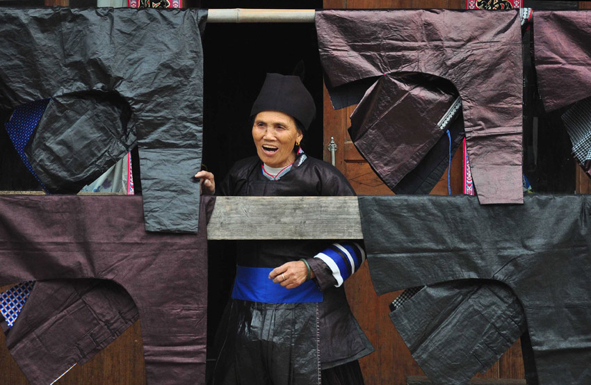
在贵州省黎平县铜关村，一位侗族老人晾晒她制作的侗族服装。
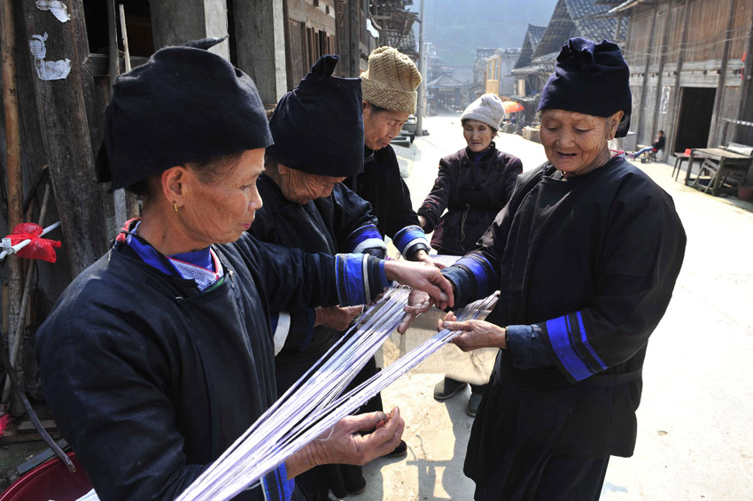
在贵州省黎平县铜关村，侗族老人在梳理纱线。
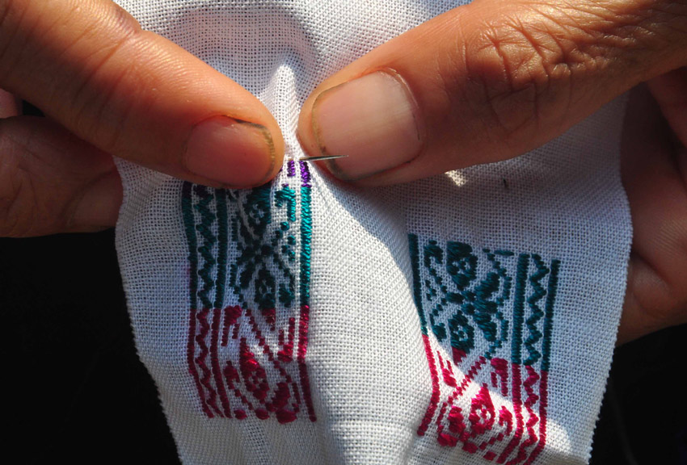
在贵州省黎平县铜关村，村民在一针一线地刺绣。
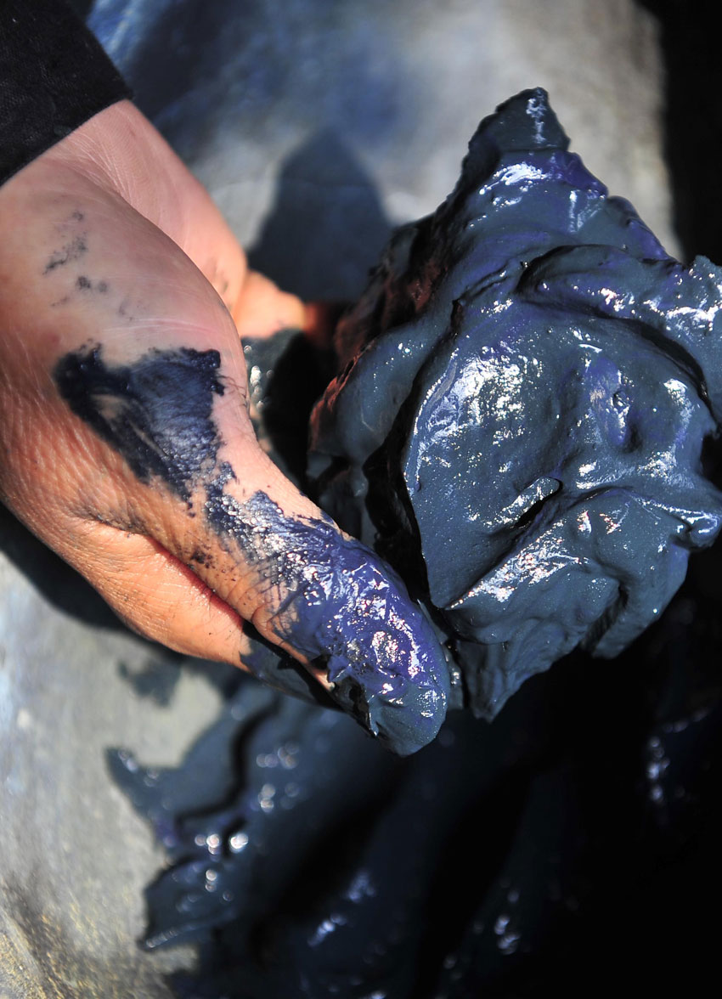
村民用靛蓝草叶加石灰做成的染料将侗布染成深蓝色。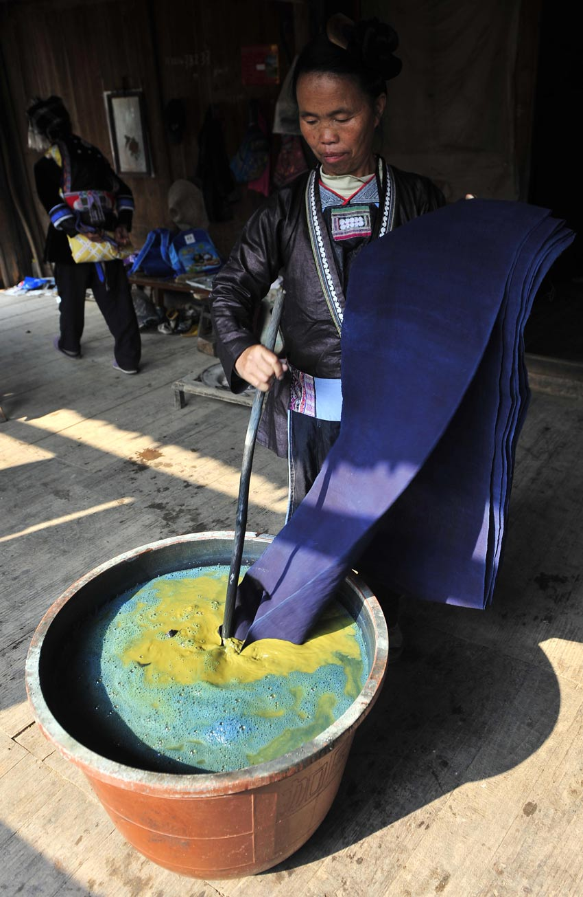
在贵州省黎平县铜关村，村民在浸染布料。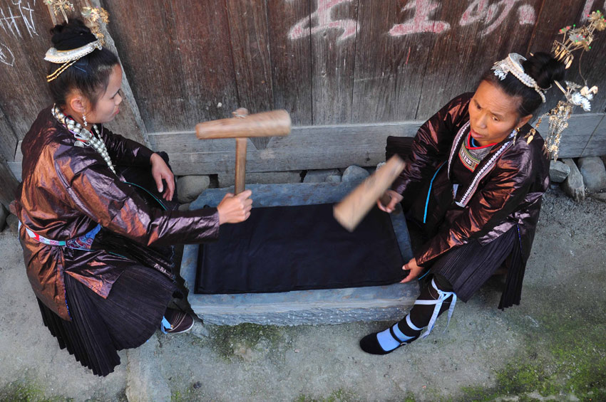
在贵州省黎平县铜关村，村民在捶打布料。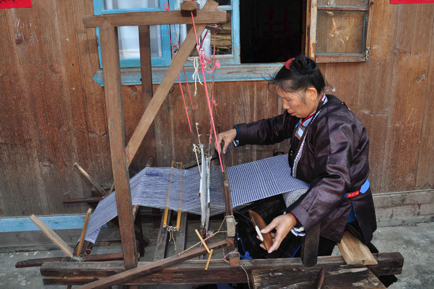
在贵州省黎平县铜关村，侗族老人用传统的织布机织布。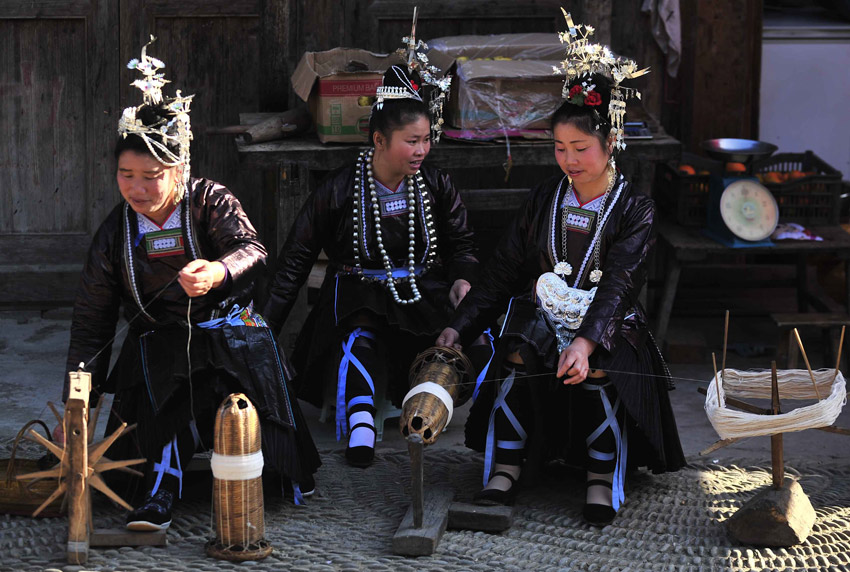
在贵州省黎平县铜关村，侗族村民在纺纱。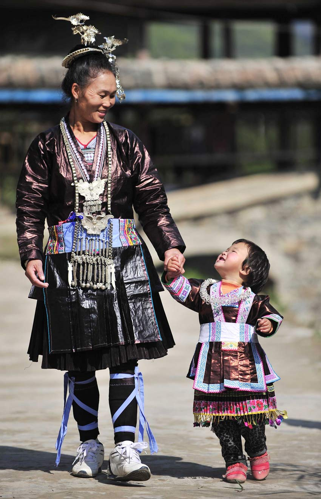
在贵州省黎平县铜关村，身穿漂亮侗族服装的侗家女走在路上。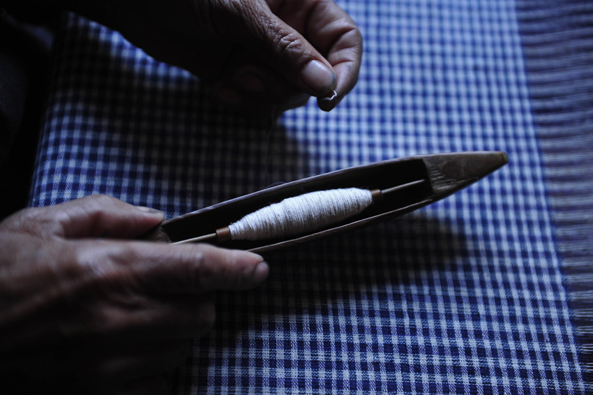